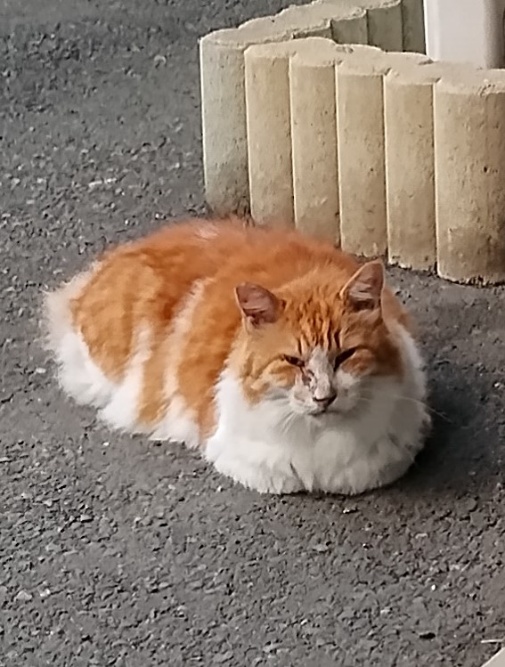
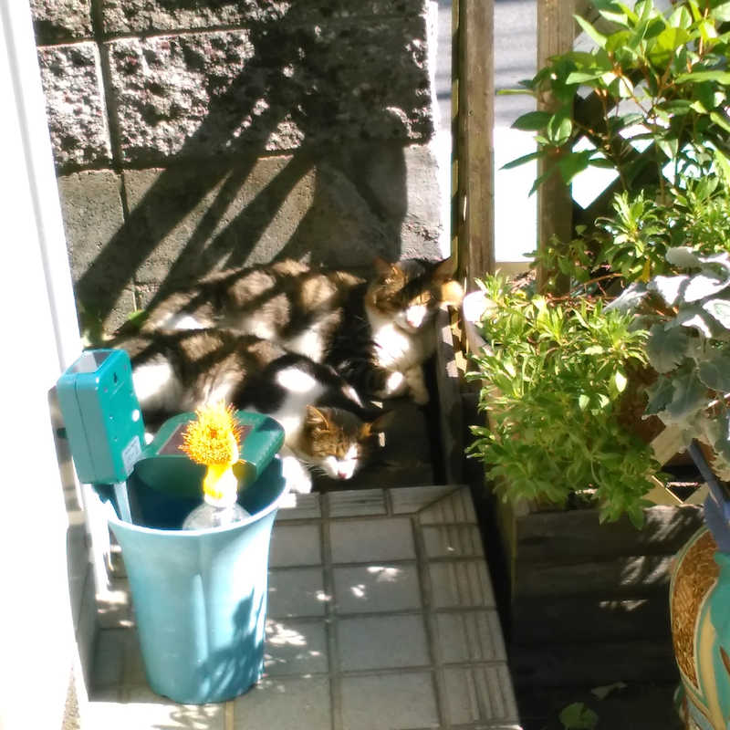

CHAPTER 12 ／ 全文
十二、猫語と猫マナーをマスターしよう
初めにお断わりしておく。未手術で人間なにさま状態の荒れたコロニー（群体）には、エサやりだろうが猫語だろうが通用せず交渉は不可能だ。酔っ払ったチンピラ軍団に何を言っても通じないのと一緒である。そのようなコロニーと共存関係を築こうとするなら、繁殖という何を差し置いても達成しなくてはならない一大クエストを強制終了させる必要がある。野良猫が捕獲と不妊去勢手術によって人間の圧倒的な実力を知り、しらふになり途方に暮れて人と折り合いを付ける気持ちになった時、猫語と猫マナーは役に立つだろう。
次の例文に登場する人物の動作を、猫語に翻訳してください。
小学生が下校中、六匹の野良猫がのんびりしているのを見つけて「あ、ねこちゃんだ！」と言いながら駆け寄りました。大きく目を開けて見回すと、白い毛がふさふさで青い目をした猫がいます。とても可愛いのでじっと見つめていると、その猫もこちらを見ました。なんだか嬉しくなってニッコリと白い歯を見せ「ねこちゃん、かわいいね！」と元気いっぱい言いました。
猫語と猫マナーは、飼育するされるという関係でない、この町の住人同士としての野良猫と人とが、お互いに気持ち良く生活するためのコミュニケーション・ツールである。間違っても猫を支配する道具ではない。
ほとんどの人は、野良猫を撫でるのは簡単だと思っている。しかし「エサをやるから撫でさせろ」と横柄に迫れば、警戒されて全然距離が縮まらない。もし相手が野良猫ではなく、まだ日本に来たばかりで言葉の通じない外国人だとしたら、このような態度で接するだろうか。マナーのある人なら、少しづつでも相手の国や言葉や慣習を知ろうとするだろう。野良猫とやりとりしたいのなら、まず『野良猫の特性』と『野良で生きる猫の都合』を知ることから始めてみてはどうだろう。
野良猫の特性
人間には、野良猫がどんな体感で生きているのかさっぱり分からない。でも住人同士として付き合うなら、なんとか理解してこちらが合わせなければならない部分はある。
瞬間消失
野良猫とのやりとりを難しくしているのは、ファーストコンタクトに失敗すると、接触した猫だけでなく、その場にいる全ての猫が一斉に一瞬で消え去ってしまうことである。これを全頭瞬間消失と私は勝手に呼んでいるが、多頭だろうと一頭だろうとこれが攻略できなければ、野良猫とのやりとりなど永遠に不可能である。
耳
野良猫に向かって犬を呼ぶように話しかければ瞬間消失されてしまう。聴覚は、犬とは違った鋭さがあり同じ対応ではいけない。人には普通の音量でも、まるで痛みが走ったかのように反応する。音量を痛覚で受けると考えて丁度良い。話しかける時は、口の中で響かせる程度で充分通じる。しかしあくまで猫自身に向けられた音への感度なので、人間同士が対面して話す場合は普通の音量で良い。
目
反射板を持ち、夜に狩りが出来るほど暗い所が良く見える。その代わり、明るい所では瞳孔がギュッと閉じられて黒目が細くなる。疲れ目が激しいのは暗い所より、瞳孔をギュッと閉じなきゃならない明るい所なんだろう。光量も痛覚で受けると考えて丁度良い。暗がりに隠れた猫に懐中電灯やスマホライトを当てれば、攻撃されたと思って嫌われても仕方がない。巷で可愛いと評判の「ごめん寝」も、もしかしたら明るさが辛いのかもしれない。
爪
鋭い爪は、内側で形成されて外側で弱くなり剥がれていく。爪研ぎは、外側の古い部分を剥がして、内側の固くて強い部分を出し、鋭くしている。犬が散歩して爪を丸めるのとは逆に、猫の爪研ぎは尖らせる。なので研ぎたての爪で引っ掻かれれば簡単に刺さり、流血の惨事に。雑菌たっぷりで傷を放っておけば化膿し、治ってもアレルギーを発症すれば、引っ掻かれるたびに鼻水が止まらない羽目になる。あえて誰かの目の前で爪を研ぐのは軽い威嚇で、今オレは攻撃的だから近寄るなという意味。構わないでおこう。
野良で生きる猫の都合
野良生活も長くなると、お外に家族や仲間がうろついていて、そうやすやすと室内で人に飼育される訳にはいかない。病気でちょっと預かっても、当家のような縄張りの中だと「オレはここだ～！ 誰か助けて～！」と窓に張り付いて一日中鳴いている。人の家の中での生活にそんなに魅力は無いようだ。
集団性
猫は肉食動物だ。ただでさえ食うか食われるかの緊張状態にある。猫が野良でコロニーを形成するのは安心と安全の確保のためでも、一匹狼とは違うスリルがあるようだ。なにしろ周りも自分も、いつ誰をエサにするか分からない。なので一見ほのぼのして見える猫の集まりも、実は細心の猫語が張り巡らされた緊張感の中にあったりする。
社会性
人と野良猫に共通し、比較的分かり易い部分。ケンカに勝って集団に秩序をもたらしたり、人間と接触して食料を得る豪胆さが尊敬を集め、ボスと認められる。人間との交渉も大概ボス格が担い、その信頼を得た人間ならコロニーを構成する他の猫との交渉は可能である。交渉役でない猫にいきなり個別交渉しようとしても逃げられる。「ウチと取引きしたいなら、まず社長のアポ取ってください」
挨拶
野良猫の一日は礼儀に始まり礼儀に終わると言うと驚く人は多い。ボス猫にその日始めて会うと、コロニーの構成員は尻尾を立てて頭を下げる挨拶をする。新参者が挨拶をしなかったり相手を間違えたりすると、若頭役がシャーシャーと注意する。大喧嘩していた隣接コロニーのボス同士が、尻尾を絡める親密な挨拶をしていて驚いた。それぐらい仲間内に仲良しアピールしておかないと、面倒な小競り合いが始まるのだろう。
個体識別
野良猫は人をそれぞれ個体識別する。一人一人の行動を監視し情報を得て対応を決めるため、ボスの信用を得た人の関係者だからといって簡単には信用されず、個別に関係を築かなければならない。「ボスの友達の隣にいるの誰？ ボスの知らない人？ じゃボクも知らない」
食事中
大概の人は、撫でることを条件にエサを提供する。嫌がれば与えないという条件を教え込み、撫でさせる猫に変えようともする。だが肉食動物にとって食事中の獲物は狙い易く、反対に獲物にも成り得るので警戒は厳重であり、必然的に食事中の主導権は野良猫が持つ。自分が姿を消して人が去るのを待ったり、触ろうとするのを見越して少しでもその素振りがあれば逃げる。さらには落ち着いて食事させない人を識別して警戒する。人間同士でも本来、食事の奢りは体を触る許可と同義ではない。
逃げ道
野良猫がのんびりしている様子は見るからに平和だが、呑気に見える猫ほど逃げる準備が整っている。綿密に逃げ道を計算し確保しているからこそ、のんびりできると言える。この計算能力が、撫でられそうだと人が近寄った場合の瞬間消失を可能にしている。
猫語
野良猫がたくさんいると、どうして皆ガン見して盛大にニャーニャー言いながらバタバタ近寄るんだろう？ それ、猫語に訳すとすごい意味だから全頭瞬間消失されちゃうよ。
猫は声の他に目や口の動き、匂いや動作、距離などを使ってしゃべる。人のように口から声を出しておしゃべりしないけど、人だっておしゃべりだけで通じ合っていない。声を出してはいけない場面での、空気を読み合う感覚を思い出してみよう。
きょり語
人は距離を選べない。なぜならこれも猫の言葉だから。その長さは現時点での心の距離であり、信頼度・親密度を表す。警戒する相手が近付けば同じだけ退き、信頼する相手ならスリスリと密着することも厭わない。仲間の尊敬を集めるためのおねだりなのか、誰かと度胸比べでもしているのか、昨日は遠かったのに今日は近いということもよくある。距離の基本は生物本来の本能的結界のようで、他者の侵すべからざる範囲と考えられる。
からだ語
体が立てる音の大きさや、動きの速度も言語である。肉食動物にとって大声や大きな足音、速い動きは攻撃を意味する。たとえ仲間であっても、すぐに攻撃できる姿勢を目にすると警戒する。誰かが手足が見えてすぐに爪が出せる姿勢だとピリピリ緊張感が走る。周囲の仲間にピリピリされたくなければ「私は誰にも攻撃するつもりはありません」と姿勢でアピールしなければならない。最も攻撃から程遠い姿勢は、手足を身体の下に隠すこと。いわゆる香箱座りは完全な平和を表現している。しかしその姿勢も、危険察知の際の逃げ足の妨げにはならない。

かお語
目は獲物を探し、口は獲物を喰らうため、見開いた目で見つめれば「お前を獲物としてロックオンしたぞ」となり、口を開けて歯を見せれば「今すぐお前を喰ってやる」となる。目を見開いて歯を剥いて見せれば、人がやっても威嚇だと通じる。逆に平和をアピールするなら目と口を閉じる。周囲に仲間が居るとよく目を閉じているが、眠っているわけではない。たまに人にも顔を向けて目を閉じ、平和のメッセージを送ってくれる。エサが欲しい時、人の視線をとらえて舌をペロリと出したりする。人が舌をペロリと出して片眉を上げ「エサいる？」と聞くこともできる。
こえ語
聴覚が大変鋭いので、近くの猫同士ではあまり使わない。ライバルへの威嚇や、遠くの仲間に急を知らせる場合に使う。野良猫が人に対してニャーニャー言う時は、年齢相応の音域ではなく子猫の高音域を使う。子猫が母猫に乳をねだる声が、同様の意味で人に通じると知っているのだ。人を母猫のように慕っていないのなら、声でなければ通じない人間への最大限の歩み寄りだろうか。
じかん語
野良猫は時計を持っていないので、何時にエサやりと言っても通じない。しかし待ち合わせは単純で、日の出と日没に縄張りに集合している。したがって、人がこれに合わせれば話が早い。夏と冬では、日の出と日没の時間が二時間も変化する。太陽の周りを公転する地球の歳差運動のためで、日々のスケジュールに追われてあくせくするうちに忘れてしまうが、自分も自然や宇宙の一員だったと思い出す助けになる。早寝を習慣にして日の出の野良猫集会に参加していれば、自律神経が整って人の健康にも大変良い。
けづくろい語
猫と生まれたからには一生つきまとう、毛繕いという日課。人は誰でも猫のこれをやりたがり、猫が自分で行う動作も大変好評だと野良猫は知っている。ボスが人にエサを求めてナデナデ交渉する時、黙って後ろに座っていればいかにも物欲しそうだし、隠れれば気付かれずお皿の数に入らないしと、どうも落ち着かない。ある日、とても腹を空かせたひょうきん者が「アタシは自分で毛繕いしますんでナデナデは結構ですがね、そうですか、エサですか、イイですね！ ついでにアタシの分も、ちーっとばかしお願いしますヨ」と盛大に毛繕いし始めた。手持ち無沙汰でも物欲しそうでも隠れてもいない上、日課のついでに人の目を楽しませるその手法は、ただ貰うより気が楽なのだろう。あっという間に伝播して、ボスの後ろに毛繕い隊が控えるように。そのような絶景は、確かに私も弱い。
猫マナー
猫語だろうと日本語だろうと、相手が居てこそ成立する。野良猫に瞬間消失されては意思疎通もへったくれも無い。猫マナーとは、人の動作によって野良猫が瞬間消失してしまわない配慮を指す。その基本は「私はあなたを襲うつもりはない」を意味する猫語を全身で表現すること。野良猫にメッセージを受け取ってもらえたら、動作をゆっくり解いて良い。
きょり語
野良猫はどこまででも逃げられるため、人から近付くのはＮＧ。猫の方からそばに行きたいと思うような、ステキな人になろう。でも来てくれる猫とは、前世か何かの因縁でもあるのだろう。来ないなら、それまでの御縁と諦めよう。どんな猫避けを使っても来たけりゃ来るし、たとえ高価なエサをチラつかせても嫌なら来ないのが野良猫である。
からだ語
対面するなら手をポケットに入れるなどして隠し、足も膝を曲げてしゃがみ込み、すぐには飛びかかれない姿勢で平和をアピールする。香箱座りの人間版である。ベンチなどに座っていれば、足の甲を下に向けて隠すと良い。通り道の猫が逃げないように、歩きながら平和をアピールするなら、出来るだけ足音を立てず、進行方向に目を向けてゆっくり歩く。この場合のゆっくりは、通常の感覚よりさらに遅い。空気を揺らさないよう意識すると良い。
かお語
ネットで見つけて、やってみたら効果絶大だった秘技。野良猫と目が合ったら、目と口を閉じ歯を見せずに口角を上げる。そして次のように念を飛ばそう。「キミに会えて、私は今とってもハッピーだよ！」以降の距離語に多大な影響を及ぼす、単なる笑顔である。
その他のコミュニケーション・ツール
エサ
全ての生き物に通用する、友好表現の共通言語である。野良猫に敷地を荒らされないよう、住人が主導権を持つための手段として大いに活躍する。だが、野良猫を支配する道具と考えるのは甘い。
ボスが人と交渉してエサを貰うと、半分残して立ち去ることがある。近くにお残し待ちが隠れているのだ。ボスのお残しは、人を警戒しすぎて自分でエサを貰えない者に恩を着せ、ボスの立場を強める道具である。これを許しておけばエサはボスから貰う物で、ボスには敬意が集まっても与える人には敬意が無く、いつまでも人の居ないところでコソコソ好き勝手をする集団であり続ける。人がボス以上の主導権を持つためには、お残しを早めに下げて、ボスではなく人に空腹アピールをするよう仕向けなければならない。エサを誰が与えているのか、誰の許しを得て領内を安全に出入りできるのかを、個別に関係を築いて定着させる。そのため小皿で一頭づつ与えて立ち去ったらすぐ下げるという、意外に気の抜けない地道な作業を地域猫の当事者たちは続けている。通りすがりの思い付きエサやりが簡単ではないことと、放置エサがいけない深い事情である。
猫避け機
説明書にある扇型の範囲を信じ、置きっぱなしで安心するのは甘い。猫避け機を野良猫は意外に避けないのだ。しかし狭い範囲を人の縄張りだと主張するのには結構使える。いにしえより猫と縁側は切っても切れない関係なのか、当家の縁側も爪とぎやマーキングの餌食になり、足跡や毛玉にまみれている。ご近所さんと仲良く座ってお茶を飲んだら服に尿が付いた、なんてことにならないよう猫避け機をいろいろ試した結果、庭から縁側に向けるより座面に置いて庭に向けるのが最も効果的だった。
猫は糞尿の主を知り、そこに置かれた意図を尊重する。猫避け機も主を知らしめ、ここから出る音は領主の意思だと印象付ければ尊重するはずなので、あえて猫の目の前で猫避け機を操作する。マーキングは主も位置も日々更新されるので、こちらも猫避け機の位置を少しづつ移動して更新し、生きたメッセージだとアピール。太陽光パネル付きの猫避け機を植木鉢に刺し、昼間充電したそれに夜間の縁側を護らせて、当家では三台使い潰した。猫避け機は、ヒト族による糞尿でない独特の縄張り主張方法だと野良猫に通じなければ、単に騒々しいだけの無害な箱でしかない。

マタタビ
オスの発情期に関係する匂いのようで、メスや早期に手術した猫はそんなに興味を示さないが、未去勢時期が長かったヤンチャなオスには絶大な効果がある。面白いのでいろんな物に振り掛けたら、あちこちでゲロっていた。飲酒と同様で二日酔いになると分かってからは、メッセージを伝えるための僅かな利用にとどめている。花壇を潰して猫用トイレスペースを新設したり、寒さ対策にと新しいダンボール箱を設置した際に少量振り掛けると、きちんと通じて正しく使ってくれる。侵入不可のメッセージが猫避け機なら、マタタビは侵入許可のメッセージである。
猫じゃらし
やりたがる割にヘタクソで野良猫に遊んでもらえない小学生に、特別に伝授しているコツ。野良猫は別に猫じゃらしを好きでも何でもない。マタタビを付けていればともかく、顔に向かってパタパタしたら瞬間消失されてしまう。結局は猫じゃらしも言葉で、自分が何を伝えたいのか自分が分かっていなければ、野良猫にも相手のしようがない。猫じゃらしは、モケモケの部分に自分が乗り移って猫と対峙する、とっても楽しいコミュニケーション・ツールだ。人は猫に比べて圧倒的に体が大きく、それだけで支配と被支配の身分格差が生じてしまう。それを人の方からグーっと縮み、捕食対象のサイズになって猫の肉食動物としての実力を体感するのが猫じゃらしの醍醐味である。もし巨大な肉食動物と遭遇してしまったら、しかも今まさに目が合っていたらどうするのか。本当にそんな場面なら何も出来ずに喰われるだろうが、これでも伝統的無差別級格闘技たる肉体チェス、大相撲を愛し世界に誇る日本人の一人である。小兵力士と巨漢力士の取り組みに幾度も力を貰った。私は臆病者だが簡単にやられてたまるものか。そんな私の猫じゃらしに野良猫は徐々に本気を出し、猛獣と化してガブガブと噛み、ひったくって持っていく。
※〈問題〉の解答は、本書のエピローグにあります。
電子版を国立国会図書館デジタルコレクションで読む ↗
ブラウザーで電子版を読む ↗
紙媒体版の所蔵情報を見る ↗